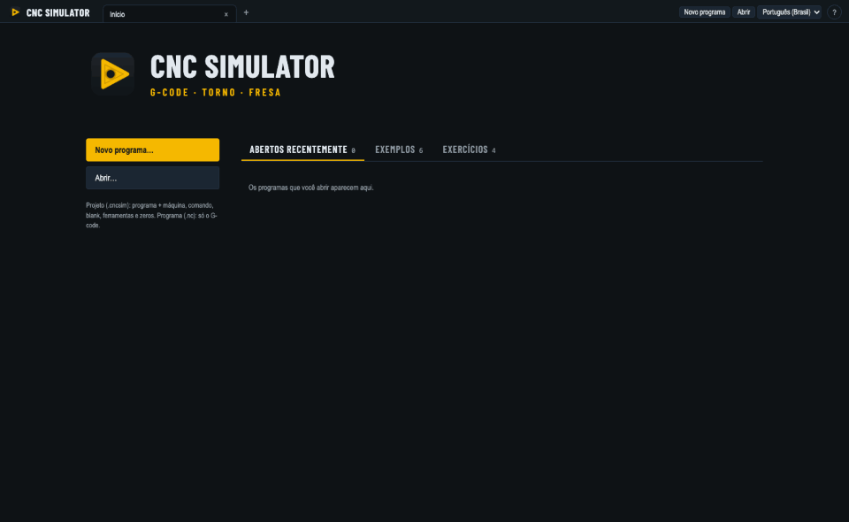

Learn and test G-code
without a machine
Aprenda e teste G-code
sem precisar da máquina
A free, open-source CNC simulator for lathes and machining centers. Fanuc, Mitsubishi and Haas controls, Macro B parametric programs, the control's own alarms and collision checks, in 3D.
Simulador CNC gratuito e de código aberto para tornos e centros de usinagem. Comandos Fanuc, Mitsubishi e Haas, programas parametrizados em Macro B, os alarmes do próprio comando e a verificação de colisões, em 3D.
The app is not signed: on Windows choose More info → Run anyway; on macOS right-click the app → Open. O app não é assinado: no Windows escolha Mais informações → Executar assim mesmo; no macOS clique com o botão direito no app → Abrir.

Students
Quem está aprendendo
Run your program block by block, see what each code does and which alarm the control would give.
Rode o programa bloco a bloco, veja o que cada código faz e qual alarme o comando daria.
Programmers
Programadores
Check what the CAM post-processor made before it reaches the machine: alarms, travels, holder and chuck collisions.
Confira o que o pós-processador gerou antes de chegar na máquina: alarmes, cursos, colisão de suporte e de placa.
Teachers
Professores
Free for every student to install at home, with ready lathe and machining center examples.
Gratuito para cada aluno instalar em casa, com exemplos prontos de torno e centro de usinagem.
Parametric programs
Programação parametrizada
Variables, IF/WHILE and G65 macro calls run as on the control.
Variáveis, IF/WHILE e chamadas G65 rodam como no comando.
What it does
O que faz
- Controls: Fanuc 0i-TF and 0i-MF, Romi D line, Mitsubishi M80, Haas NGC, all defined in JSON.
- Lathe cycles: G71/G72/G73/G70, G90/G94, G76 threading.
- Tool offsets and work offsets (G54–G59, G54.1, G154), cutter and nose radius compensation.
- Material removal on blocks and bars, tools and holders in 3D.
- Operator panel: single block, M01, block delete, feed and rapid overrides, breakpoints.
- Editor with live path and alarms; new programs start with a safe header for the control.
- Comandos: Fanuc 0i-TF e 0i-MF, linha Romi D, Mitsubishi M80, Haas NGC, todos descritos em JSON.
- Ciclos de torno: G71/G72/G73/G70, G90/G94, rosca G76.
- Corretores de ferramenta e zeros de peça (G54–G59, G54.1, G154), compensação de raio da fresa e da ponta.
- Remoção de material em bloco e barra, ferramentas e suportes em 3D.
- Painel de operação: bloco a bloco, M01, salto de bloco, overrides de avanço e rápido, pontos de parada.
- Editor com percurso e alarmes ao vivo; programas novos começam com um cabeçalho seguro para o comando.